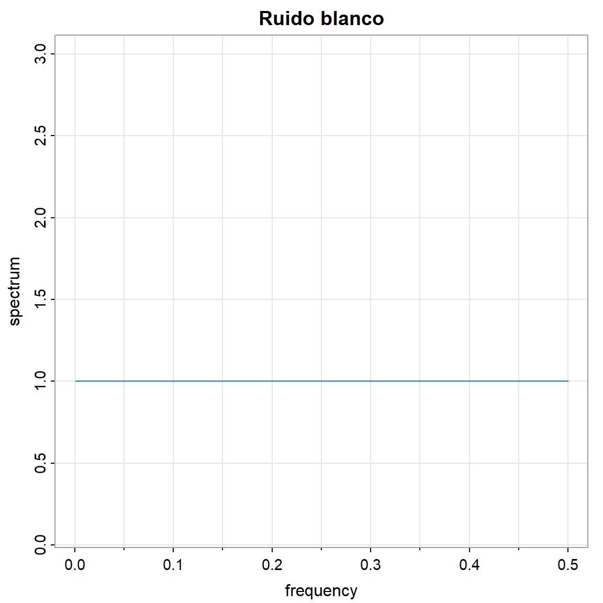
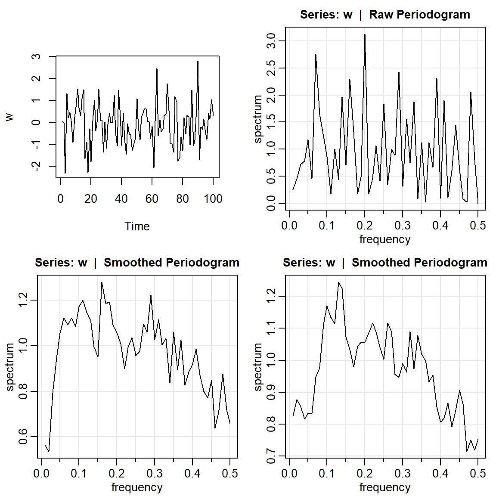
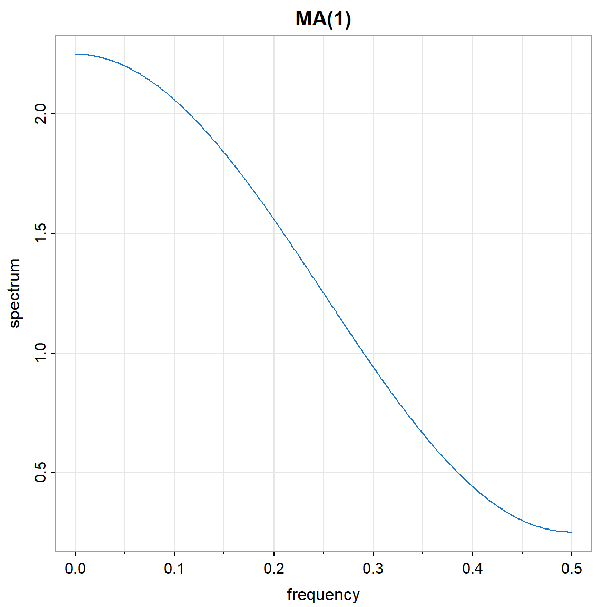
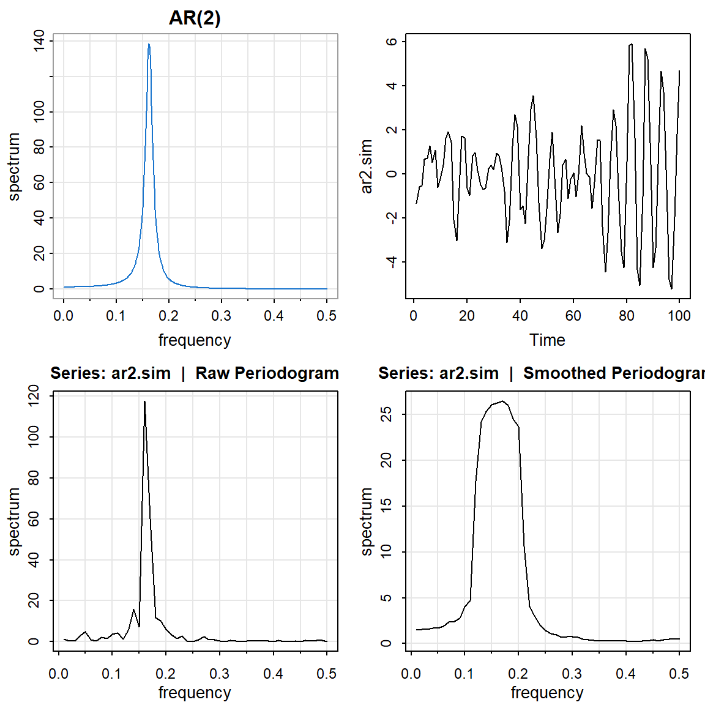
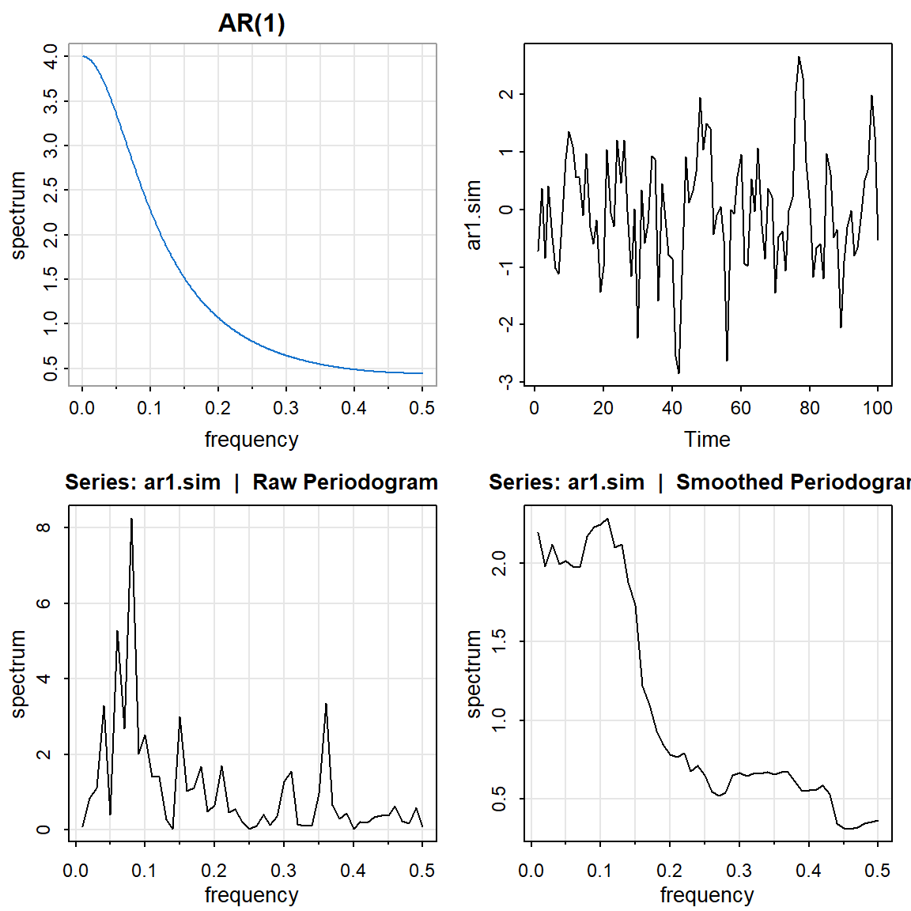
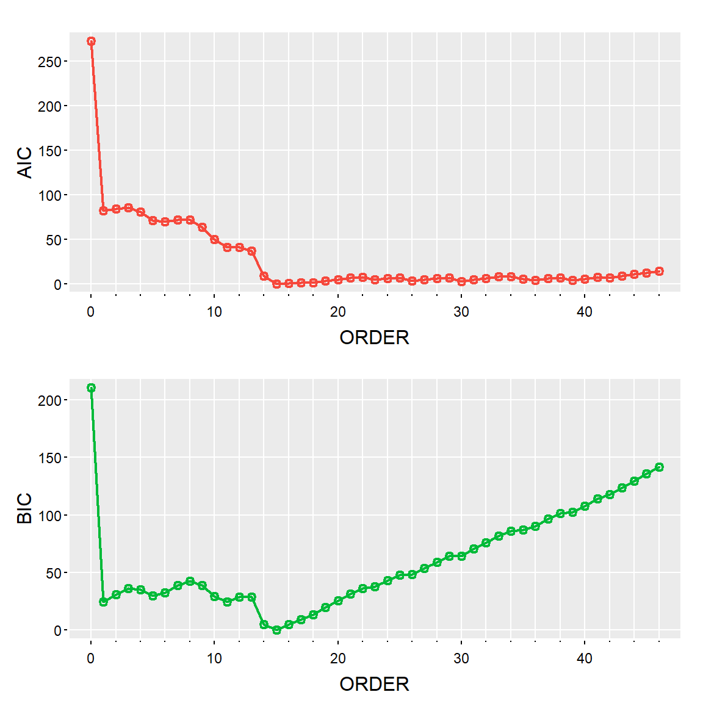

![]()
library(ggplot2)
library(forecast)
library(fpp2)
library(astsa)
library(tidyverse)
library(TSA)Tema 1: Análisis espectral de series temporales
1 librerías
2 Periodograma del ruido blanco, MA(1), AR(2) y AR(1).
2.1 Ruido blanco
- La densidad espectral \(f(\omega)\).
arma.spec(ar = 0, ma = 0 ,main="Ruido blanco", col=4)
- Simulación con \(n=100\).
par(mfrow=c(2,2))
w = rnorm(100,0,1)
plot.ts(w, main="")
mvspec(w)
mvspec(w, kernel('daniell',4)) Bandwidth: 0.09 | Degrees of Freedom: 18 | split taper: 0% mvspec(w, kernel('daniell',7)) Bandwidth: 0.15 | Degrees of Freedom: 30 | split taper: 0% 
2.2 MA(1)
- La densidad espectral \(f(\omega)\).
arma.spec(ar = 0 , ma =.5, main="MA(1)", col=4)
par(mfrow=c(2,2))
ma.sim <- arima.sim(list(order = c(0,0,1), ma = 0.5), n = 100)
ts.plot(ma.sim)
mvspec(ma.sim)
mvspec(ma.sim, kernel('daniell',4)) Bandwidth: 0.09 | Degrees of Freedom: 18 | split taper: 0% mvspec(ma.sim, kernel('daniell',7)) Bandwidth: 0.15 | Degrees of Freedom: 30 | split taper: 0% 2.3 AR(2) con comportamiento periódico
par(mfrow=c(2,2))
arma.spec(ar=c(1,-.9), ma= 0 , main="AR(2)", col=4) #periodico
ar2.sim <- arima.sim(list(order = c(2,0,0), ar = c(1,-0.9)), n = 100)
ts.plot(ar2.sim)
mvspec(ar2.sim)
mvspec(ar2.sim, kernel('daniell',4)) Bandwidth: 0.09 | Degrees of Freedom: 18 | split taper: 0% 
2.4 AR(1)
par(mfrow=c(2,2))
arma.spec(ar=c(0.5), ma= 0 , main="AR(1)", col=4) #periodico
ar1.sim <- arima.sim(list(order = c(1,0,0), ar = c(0.5)), n = 100)
ts.plot(ar1.sim)
mvspec(ar1.sim)
mvspec(ar1.sim, kernel('daniell',7)) Bandwidth: 0.15 | Degrees of Freedom: 30 | split taper: 0% 
3 SOI y Reclutamiento de peces
Se tiene la serie ambiental de índice de oscilación del sur (SOI, Southern Oscillation Index), y la serie de número de peces nuevos (Reclutamiento) de 453 meses de 1950 a 1987. SOI mide cambios en presión relacionada a la temperatura del superficie del mar en el oceano pacífico central, el cual se calienta cada 3-7 años por el efecto El Niño.
par(mfrow = c(2,2))
tsplot(soi, ylab="", main="SOI")
acf(soi, lag.max = 60)
tsplot(rec, ylab="", main="Reclutamiento")
acf(rec, lag.max = 60)
3.1 Periodograma crudo
par(mfrow=c(2,1))
soi.per = mvspec(soi)
abline(v=1/4, lty="dotted")
rec.per = mvspec(rec)
abline(v=1/4, lty="dotted")
head(soi.per$details) frequency period spectrum
[1,] 0.025 40.0000 0.0092
[2,] 0.050 20.0000 0.0497
[3,] 0.075 13.3333 0.0120
[4,] 0.100 10.0000 0.0086
[5,] 0.125 8.0000 0.0152
[6,] 0.150 6.6667 0.03383.1.1 SOI
soi.per$details[c(10,40),] frequency period spectrum
[1,] 0.25 4 0.0537
[2,] 1.00 1 0.9722U = qchisq(.025,2)
L = qchisq(.975,2)
# para frecuencia= 1/4
c(2*soi.per$spec[10]/L,2*soi.per$spec[10]/U)[1] 0.0145653 2.1222066# para frecuencia= 1
c(2*soi.per$spec[40]/L,2*soi.per$spec[40]/U)[1] 0.2635573 38.40108003.1.2 REC
rec.per$details[c(10,40),] frequency period spectrum
[1,] 0.25 4 1197.369
[2,] 1.00 1 1777.745U = qchisq(.025,2)
L = qchisq(.975,2)
# para frecuencia= 1/4
c(2*rec.per$spec[10]/L,2*rec.per$spec[10]/U)[1] 324.5887 47293.5384# para frecuencia= 1
c(2*rec.per$spec[40]/L,2*rec.per$spec[40]/U)[1] 481.9201 70217.18073.2 Periodograma suavizado
3.2.1 El núcleo de Daniell
kernel('daniell',4)Daniell(4)
coef[-4] = 0.1111
coef[-3] = 0.1111
coef[-2] = 0.1111
coef[-1] = 0.1111
coef[ 0] = 0.1111
coef[ 1] = 0.1111
coef[ 2] = 0.1111
coef[ 3] = 0.1111
coef[ 4] = 0.1111plot(kernel("daniell", 4))par(mfrow=c(2,1))
soi.ave = mvspec(soi, kernel('daniell',4)) Bandwidth: 0.225 | Degrees of Freedom: 16.99 | split taper: 0% abline(v = c(.25,1,2,3), lty=2)
soi.rec = mvspec(rec, kernel('daniell',4))Bandwidth: 0.225 | Degrees of Freedom: 16.99 | split taper: 0% abline(v=c(.25,1,2,3), lty=2)length(soi) #n[1] 453soi.ave$n.used #n'[1] 480soi.ave$Lh # L[1] 9Note que los grados de libertad se calculan de la siguiente forma:
2*9*453/480[1] 16.9875df = soi.ave$df # df = 16.98753.3 Intervalos de confianza
U = qchisq(.025, df) # U = 7.555916
L = qchisq(.975, df) # L = 30.17425
soi.ave$spec[10] # 0.0495202[1] 0.04952026soi.ave$spec[40] # 0.1190800[1] 0.11908# para frecuencia= 1/4
round(c(df*soi.ave$spec[10]/L,df*soi.ave$spec[10]/U),4)[1] 0.0279 0.1113# para frecuencia= 1
round(c(df*soi.ave$spec[40]/L,df*soi.ave$spec[40]/U),4)[1] 0.0670 0.26773.4 Periodograma suavizado en logarítmo
soi.ave = mvspec(soi, kernel('daniell',4),log="yes")Bandwidth: 0.225 | Degrees of Freedom: 16.99 | split taper: 0% abline(v = c(.25,1,2,3), lty=2)rec.ave = mvspec(rec, kernel('daniell',4),log="yes")Bandwidth: 0.225 | Degrees of Freedom: 16.99 | split taper: 0% abline(v=c(.25,1,2,3), lty=2)3.5 Extensiones del periodograma suavizado
kernel("modified.daniell", c(10,10)) mDaniell(10,10)
coef[-20] = 0.000625
coef[-19] = 0.002500
coef[-18] = 0.005000
coef[-17] = 0.007500
coef[-16] = 0.010000
coef[-15] = 0.012500
coef[-14] = 0.015000
coef[-13] = 0.017500
coef[-12] = 0.020000
coef[-11] = 0.022500
coef[-10] = 0.025000
coef[ -9] = 0.027500
coef[ -8] = 0.030000
coef[ -7] = 0.032500
coef[ -6] = 0.035000
coef[ -5] = 0.037500
coef[ -4] = 0.040000
coef[ -3] = 0.042500
coef[ -2] = 0.045000
coef[ -1] = 0.047500
coef[ 0] = 0.048750
coef[ 1] = 0.047500
coef[ 2] = 0.045000
coef[ 3] = 0.042500
coef[ 4] = 0.040000
coef[ 5] = 0.037500
coef[ 6] = 0.035000
coef[ 7] = 0.032500
coef[ 8] = 0.030000
coef[ 9] = 0.027500
coef[ 10] = 0.025000
coef[ 11] = 0.022500
coef[ 12] = 0.020000
coef[ 13] = 0.017500
coef[ 14] = 0.015000
coef[ 15] = 0.012500
coef[ 16] = 0.010000
coef[ 17] = 0.007500
coef[ 18] = 0.005000
coef[ 19] = 0.002500
coef[ 20] = 0.000625plot(kernel("modified.daniell", c(10,10)))k = kernel("modified.daniell", c(3,3))
soi.smo = mvspec(soi, kernel=k, taper=.1)Bandwidth: 0.231 | Degrees of Freedom: 15.61 | split taper: 10% abline(v = c(.25,1), lty=2)## Repeat above lines with rec replacing soi
soi.smo$df # df = 17.42618[1] 15.61029soi.smo$bandwidth # B = 0.2308103[1] 0.2308103# An easier way to obtain soi.smo:
soi.smo = mvspec(soi, spans=c(7,7), taper=.1, nxm=4)Bandwidth: 0.231 | Degrees of Freedom: 15.61 | split taper: 10% # hightlight El Nino cycle
rect(1/7, -1e5, 1/3, 1e5, density=NA, col=gray(.5,.2))
mtext("1/4", side=1, line=0, at=.25, cex=.75) 3.6 Algunos núcleos conocidos
plot(kernel("fejer", 10, r=6)) plot(kernel("dirichlet", 10, r=6)) 3.7 Periodograma paramétrica
- Espectro de AR - orden=15 seleccionado de acuerdo al AIC.
param.spec <- spec.ic(soi, detrend=TRUE, col=4, lwd=2, nxm=4) tsplot(param.spec[[1]][,1], param.spec[[1]][,2:3], type='o', col=2:3, xlab='ORDER', nxm=5, lwd=2, gg=TRUE)
C.info<-data.frame(param.spec[[1]])
colnames(C.info)<-c("orden","AIC","BIC")
C.info %>% gather(
key = "C.Info",
value = "IC",
AIC,BIC
) %>% ggplot() +
geom_line( aes(x = orden, y = IC, group=C.Info,color=C.Info))4 Robot
La posición final en una dirección x de un robot industrial sometido a una serie de ejercicios planificados muchas veces.
data(robot)
plot(robot,ylab='End Position Offset',xlab='Time')acf(robot)robot.per1 = mvspec(robot) robot.per2 = mvspec(robot, kernel('daniell',4)) Bandwidth: 0.028 | Degrees of Freedom: 18 | split taper: 0% k = kernel("modified.daniell", c(3,3))
robot.per3 = mvspec(robot, kernel=k, taper=0)Bandwidth: 0.028 | Degrees of Freedom: 18.46 | split taper: 0% robot.per3 = mvspec(robot, kernel=k, taper=.1) #el concepto de taperingBandwidth: 0.028 | Degrees of Freedom: 16.54 | split taper: 10% param.specAIC <- spec.ic(robot, col=4, lwd=2, nxm=4) param.specBIC <- spec.ic(robot, BIC= TRUE, col=4, lwd=2, nxm=4) param.specAIC[[1]] ORDER AIC BIC
[1,] 0 10.7765632 6.040141
[2,] 1 0.9556785 0.000000
[3,] 2 0.0000000 2.825065
[4,] 3 0.9160514 7.521860
[5,] 4 2.8906264 13.277178
[6,] 5 3.7749143 17.942210
[7,] 6 1.6521891 19.600228
[8,] 7 2.4366184 24.165401
[9,] 8 4.4131749 29.922701
[10,] 9 6.3369928 35.627262
[11,] 10 2.3712336 35.442247
[12,] 11 4.3609349 41.212692
[13,] 12 4.0004171 44.632917
[14,] 13 5.9784794 50.391723
[15,] 14 7.1432083 55.337196
[16,] 15 9.0585952 61.033326
[17,] 16 9.3205038 65.075978
[18,] 17 11.3135970 70.849815
[19,] 18 12.7015641 76.018525
[20,] 19 12.7468127 79.844517
[21,] 20 14.7415396 85.619988
[22,] 21 16.7313093 91.390501
[23,] 22 17.1978537 95.637789
[24,] 23 18.5603010 100.780980
[25,] 24 20.0941864 106.095609
[26,] 25 21.9993978 111.781564
[27,] 26 23.5830459 117.145955
[28,] 27 25.1396493 122.483302
[29,] 28 25.4968210 126.621217
[30,] 29 27.3492013 132.254341
[31,] 30 28.0137485 136.699632
[32,] 31 28.4275014 140.894128
[33,] 32 29.8756941 146.123065
[34,] 33 28.4831980 148.5113125 Flujo de rio
El caudal (en pies cúbicos por segundo) para el río Iowa, medido en Wapello, de 09/1958 - 08/2006.
data(flow)
plot(flow,ylab='River Flow')acf(flow)flow.per1 = mvspec(flow) flow.per1.log = mvspec(flow,log="yes") flow.per2 = mvspec(flow, kernel('daniell',4)) Bandwidth: 0.188 | Degrees of Freedom: 18 | split taper: 0% k = kernel("modified.daniell", c(3,3))
flow.per3 = mvspec(flow, kernel=k)Bandwidth: 0.192 | Degrees of Freedom: 18.46 | split taper: 0% flow.per3.log = mvspec(flow, kernel=k,log="yes")Bandwidth: 0.192 | Degrees of Freedom: 18.46 | split taper: 0% param.specAIC <- spec.ic(flow, col=4, lwd=2, nxm=4) param.specBIC <- spec.ic(flow, BIC= TRUE, col=4, lwd=2, nxm=4) param.specAIC[[1]] ORDER AIC BIC
[1,] 0 389.8044749 361.206701
[2,] 1 27.5010916 3.259425
[3,] 2 19.8855589 0.000000
[4,] 3 21.4158041 5.886353
[5,] 4 13.3660881 2.192745
[6,] 5 14.8445872 8.027351
[7,] 6 15.2704992 12.809371
[8,] 7 12.2699892 14.164969
[9,] 8 11.3385007 17.589588
[10,] 9 12.1956757 22.802870
[11,] 10 10.1413443 25.104647
[12,] 11 2.7402421 22.059652
[13,] 12 4.4150040 28.090522
[14,] 13 1.6781764 29.709802
[15,] 14 0.0000000 32.387733
[16,] 15 0.4998036 37.243644
[17,] 16 2.4917208 43.591669
[18,] 17 2.2115757 47.667632
[19,] 18 3.7124955 53.524659
[20,] 19 5.4161534 59.584425
[21,] 20 7.2588921 65.783271
[22,] 21 8.4081931 71.288680
[23,] 22 8.4871728 75.723767
[24,] 23 3.3227512 74.915453
[25,] 24 4.1009357 80.049745
[26,] 25 5.8299700 86.134887
[27,] 26 5.7482580 90.409283
[28,] 27 7.2991786 96.316311
[29,] 28 5.0471421 98.420382
[30,] 29 6.5763135 104.305661
[31,] 30 4.8966798 106.982135
[32,] 31 6.3177889 112.759352
[33,] 32 8.3157787 119.113450
[34,] 33 10.2544405 125.408219
[35,] 34 6.4850119 125.994898
[36,] 35 5.3534112 129.219405
[37,] 36 7.1344679 135.356570
[38,] 37 8.3068933 140.885103
[39,] 38 7.7269521 144.661269
[40,] 39 9.5537172 150.844142
[41,] 40 11.3631255 157.009658
[42,] 41 13.3540204 163.356660
[43,] 42 14.8523643 169.211112
[44,] 43 16.2986459 175.013501
[45,] 44 18.2450183 181.315981
[46,] 45 19.1930642 186.620135
[47,] 46 20.9148189 192.697997
[48,] 47 22.9135843 199.052870
[49,] 48 19.7312602 200.226654
[50,] 49 14.8540877 199.705589
[51,] 50 14.5436133 203.751222
[52,] 51 15.4865733 209.050290
[53,] 52 7.7964871 205.716311
[54,] 53 8.8416217 211.117553
[55,] 54 10.3327996 216.964839
[56,] 55 12.0250009 223.013148
[57,] 56 13.8995622 229.243817
[58,] 57 15.1955216 234.895884
[59,] 58 17.1260380 241.182508